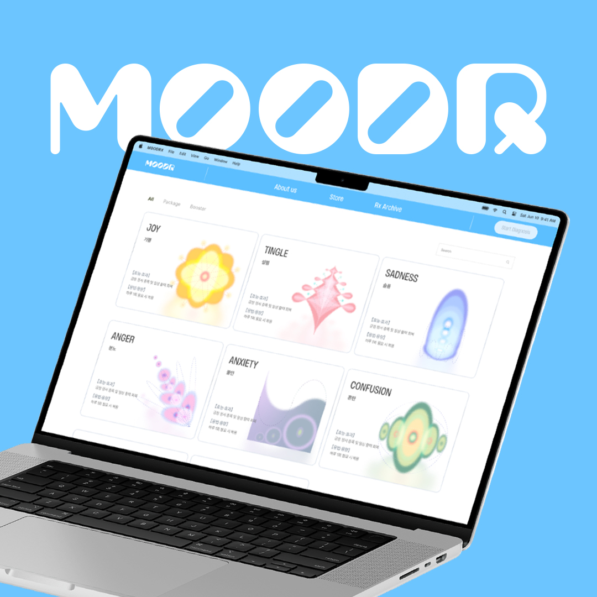
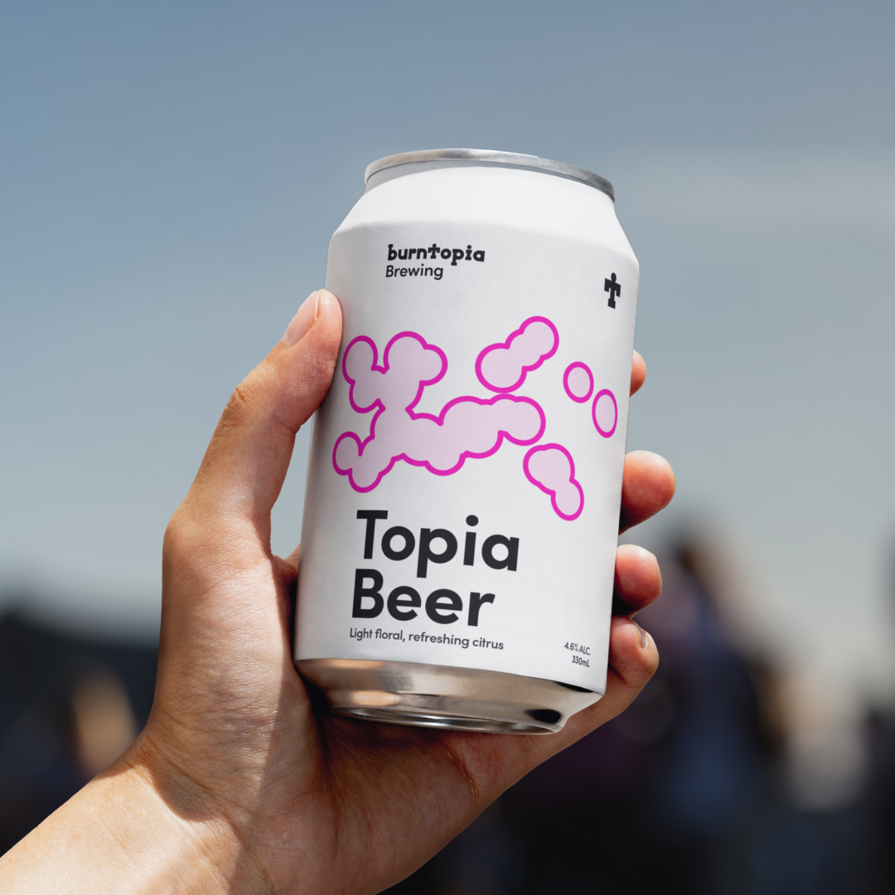

Single-Use Planters
한 번 쓰이고 버려지는 화분들
Background
Plastic plant pots are largely treated as single-use products. In most cases, they are temporarily used during plant cultivation and transportation, then discarded immediately after repotting.
짧은 사용 이후 버려지는 일회성 화분의 흐름을 관찰하고, 소재와 사용 맥락을 통해 새로운 제품 시스템의 가능성을 탐구합니다.
Plastic Disposal
Distribution
OECD, Global Plastics Outlook, 2022
Background
Every year, over 500 million plastic plant pots are discarded worldwide. However, most of them are not recycled due to mixed materials and contamination from soil.
화분의 생산과 폐기 과정에서 생기는 문제를 분석하고, 제품의 수명과 재료의 순환 구조를 다시 설계합니다.

달걀껍질

과일껍질

코코넛 섬유

밀기울
Hypothesis Generation
To develop a biodegradable material alternative, we investigated biomass resources frequently discarded in household environments.
버려지는 유기성 재료를 활용해 자연스럽게 분해되는 화분을 제안하고, 제품 사용 이후의 흐름까지 고려합니다.